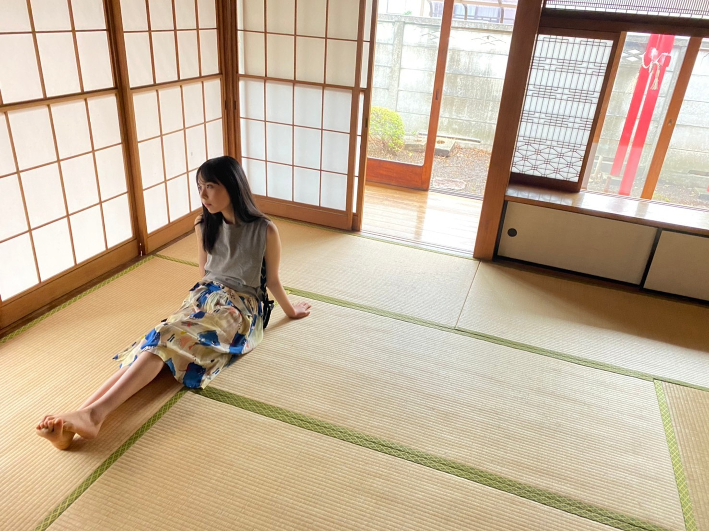
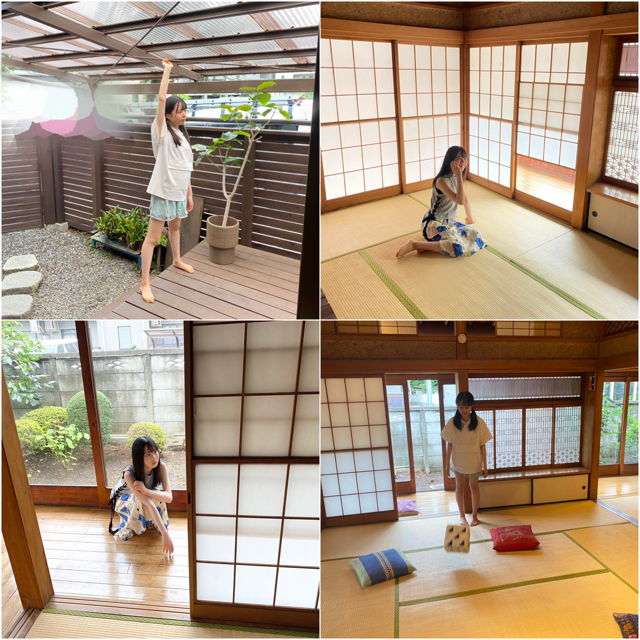

2020/0727Mon水風船みたい。佐藤璃果
こんにちは︎︎︎︎︎☺︎
今日は7月27日月曜日
ブログを開いて下さり、
ありがとうございます︎︎︎︎︎。
乃木坂46 新4期生 岩手県出身
佐藤 璃果(さとう りか)です。

こちらは先日発売された、
B.L.T.9月号さんのオフショットです。
ブログのコメントに、読んだ感想や
読んだよ！というメッセージ、
とても嬉しいです。
心が温まります。
ありがとうございます。

久々の、二つ結びです。( *˙ ˙* )
サイコロを私も振ることが出来て
嬉しかったです。
梅雨らしく雨が降っていました。
梅雨の気分を存分に味わえました。
まだまだ未熟者すぎるけれど、
どんどん成長した姿を見せられるように、
努めます。
B.L.T.さん、楽しく、勉強になる時間を
ありがとうございました。
私の次のブログ担当日はもう、
8月ということで、
きっとクーラーをかける日も
多くなると思います。
つい先日、私は
部屋の電気を消そうとしたのに、
テレビのリモコンを
クーラーの方に向けていた
自分でびっくりです。
本来なら
部屋の電気を消すには
電気のリモコンが必要で、
方向は当たりまえに、部屋の照明。
というようなことにならないよう、
皆さん、気をつけてくださいね( '-' )
あと、水分補給もしっかりと！

ねっ！！
そして、7月生まれの皆さん、
お誕生日おめでとうございます( ´ ꒳ ` )
素敵な1年になりますように。
今回は、
おからパウダーガトーショコラです。

*****************************************
7月26日、山下美月さん
❁お誕生日おめでとうございます❁
本当に名前の通り美しくて、
すれ違った際に、思わず心の中で、
「美！！」と叫んでしまいます。
僭越ながら、先日のLINEライブでの
久保史緒里さんの第一印象と同じになってしまいました...。
でも、やはり、「美！！」
という気持ちになります。
素敵な1年になりますように。
~~~質問~~~
○ 生誕記念のTシャツにはビジョンフリーゼちゃんの絵を描いたんだけど、りかちゃんってやっぱ犬派かな？
犬も猫も可愛くて好きです！
ぬっこ！
○何か克服したいと思ってることはある？
食欲
○ 夏によく着る服ってどんな服ですか〜？
ワンピース！白くて涼しい服です。
家はTシャツ、ショートパンツ
○ 日向坂の河田陽菜ちゃんとは連絡取りましたか？
先日、お誕生日おめでとうの
連絡をしました♡
7月23日0:00ぴったりに送りました！
ぴったりに送るのって少し躊躇いますよね、
重ないかなって、、
出会ってばかりの人だと躊躇って結局朝とか夜とかに送る事も多いんですけど、
ぴったり送れて良かったです~
○ 璃果ちゃんの夏休みの思い出で一番印象に残ってることを教えて！
中学生の時、ほぼ毎日部活していたことです。
○ 髙橋未来虹ちゃんの好きなところを教えて！りかみくに推しです♡♡
ありがとうございます。
とにかくお優しいです。
研修生時代も周りの子の写真を沢山撮っていて、愛が感じられるし、
色々しっかりと考えているし、
何より、食の趣味が合う。
最近ずっと食の話をしています。
ここ一週間の連絡を振り返ると...
【今現在】焼き芋→ポテト→キャラメルスイーツ→お肉→飲茶→中華......続く【1週間前】
飲茶って「やむちゃ」って読むみたいです。
みくにんに教えて貰いました♡
みたいな感じです！
私がみくにんの写真を沢山撮りたいし、
またお電話したいです。
♡写真に載せてる黒のレースのトップス可愛い！どこのですか？
ありがとうございます( . .)"
archivesさんです❤︎
♡璃果ちゃんが今狙ってるコスメはどんなコスメですか？またパーソナルカラー診断したことあれば教えてください
今、秋冬の新作コスメばかり調べています！
秋冬の色味がとても好きです。
今まで挑戦した事がないお店のものを購入してみたいです~。
でも、最近コスメ買ってない(;_;)
逆に狙ってる物ありますでしょうか？
パーソナルカラー診断、ずっとしてみたいなって気持ちはあったんですけど、
まだ無くて...
ネットの写真を撮って診断してくれる物はした事があります！
♡メガネをかけているときに着ている青いお洋服はどこのですか？
dazzlinさんです❤︎
○この先、モバメが送れるようになったら、どんなモバメを送りたいですか？
心の距離も、画面的な距離も
近いようなものを目指したいです。
○ 課題頑張るのでエール貰えたら嬉しい♪
ふぉいおー！！です。
○ りかちゃんは水は飲みますか？最近、水を飲むのにハマっています！
沢山飲んでいますよ~。
○ B.L.Tさんの撮影でケーキが出てきた時の感情を現してください！(笑)
とんでもなく嬉しいです、、
驚きです。
私、お誕生日が夏休みと被るタイプの人で、
誕生日を祝って頂けるなんて、幸せ過ぎました( ´ ꒳ ` )
サプライズケーキ...
多分、初めて貰った気がします。
○ アンサングシンデレラ観てますか？
毎週しっかり見ています( ੭ ˙˙ )੭
*****************************************
明日はるなぴです。
新4期生回、完走したね！！
お疲れ様です。
改めてありがとうございました。
天才。
ふおーー！！
と叫んでいる動画を送ってくれたので、
ふおーー！！
というボイスメッセージを返しました。
*****************************************
皆さんにとって今日が
素敵な一日になりますように。

まきまき
またね。
#19 ❤︎ り か ❤︎

PROFILE
新4期生リレー
202104
| SUN | MON | TUE | WED | THU | FRI | SAT |
|---|---|---|---|---|---|---|
| 1 | 2 | 3 | ||||
| 4 | 5 | 6 | 7 | 8 | 9 | 10 |
| 11 | 12 | 13 | 14 | 15 | 16 | 17 |
| 18 | 19 | 20 | 21 | 22 | 23 | 24 |
| 25 | 26 | 27 | 28 | 29 | 30 | |

コメント(341)
今日も可愛すぎます！
ノギザカスキッツたのしみすぎるー！
はやく会いたいですー！
ゆっちゃんより。
乃木坂の衣装で好きな衣装は？
ブログ更新ありがとうございます！
今日も1日お疲れ様でした！
久しぶりのコメントだぁ…色々大変なことあって全然来れなかった
ツインテールりかちゃんめっちゃ好きなんだよねー笑
とても可愛かった！
地味に7月生まれなので画像保存しちゃいました笑ありがとう！
ではでは！またブログ来ますねー！
ドラゴン22
今年はもしかしたら7月に台風が1回も来ないかもしれないから全然8月って感じがしないんだよね笑
璃果ちゃんは台風です夏を感じたりする？？笑
誕生日祝ってもらえるのって嬉しいよね！
僕も9月末が誕生日やから今までやと学校で祝って貰えたんやけど、大学は10月頭に始まるから誰にも祝ってもらえへんの悲しいんよね。
璃果ちゃんは誕生日が8月やから直接祝ってもらうとしたら、どんな感じで祝ってもらってる？？
んじゃもう8月やけど、こっからまた頑張っていこー
いつも癒されます
質問
りかちゃんはピーマン食べれるー？
B.L.Tのオフショットありがとう、とても可愛いよ！
私もうちではテレビと、クーラー、あと電気のリモコンがあるんだけど、なぜか電気を消した時も触った感覚でなんとなく間違ったことないんですが、これからはとりあえず気をつけます（笑）
そういえば、りかちゃんってぬっこ派なんですね。
私はてっきり犬派だと思っていたんですが、両方可愛いから選べないってのもすごくわかります。
質問に答えてくれてありがとうね。
じゃ、また5日後に
ぱと◢璃果坂より
応援してるよ！
ブログ更新ありがとう〜！
BLT注文したものの、まだ届いてないので今から楽しみにしてます（読んだら、またコメントで感想しますね）
あと、ねっ！のところと最後の画像がめちゃめちゃ可愛いくて声出ました。
未来虹ちゃんと仲良いエピソードや河田陽菜ちゃんに誕生日メッセージ送ったところがめちゃくちゃほんわかしました。
他のメンバーと仲良いみたいなエピソードまたあったら、ぜひブログに載せてほしいです。
それでは最近暑くてクーラーつける機会が多くなった時期でもあり、コロナが再度ぶり返してきたりもしますが、お身体にお気をつけて頑張ってください！！
すきぴです‼︎笑笑
質問します‼︎
新4期で1番騒がしいのは誰ですか？
これからも応援してます‼︎
りっちゃん！
やっほー！
ひろき(Yandji)です☺️
ブログ更新ありがとー！！！
質問タイムー！！！
カラオケの十八番ある？
また、コメントするね！
では、またねー！
ひろき(Yandji)より
ブログ更新ありがとう！
オフショット載せてくれてありがとう！！
質問答えてくれてありがとう！！！
りかちゃんのブログ読めて幸せな気分になりました〜
質問
◯今は何を食べたい気分ですか？
岩手のおとなり宮城から応援してます☺︎
れな
あっ、BLTのオフショットだ＼(^o^)／ありがたいよ(*´ω｀*)
そしてやっぱり綺麗だな(｡>﹏<｡)
普通に部屋も明るくて綺麗だよね＼(^o^)／
ああ、やっぱり床に座っている全身姿はたまらないなあ(｡>﹏<｡)
ツインテール可愛いから、もっとやってほしいよ(*´ω｀*)
いや、そもそもこっちは電気を消そうとうするときに、リモコンを使わないよ（笑）
ねっ！！（笑）可愛い、黒い服姿(*´ω｀*)
いつか美月と仕事できたら良いよね、ガトーショコラもあげてほしいよ(*´ω｀*)
明日またるなぴーか、本当に早いなあ(ﾟдﾟ)！
お互いのやりとりも気になるなあ(*´ω｀*)
これからも頑張って(/･ω･)/
まきまきりかちゃん可愛い(*´ω｀*)
リモコンを間違えて向きも間違えるたまにやるよねーー特にこの時期色々とリモコンが増えるから余計に笑
あと二つ結びもおろしてるのもまいてるのもすごく似合っててかわいいです！最高です！おからパウダーガトーショコラも美味しそう！
水分補給もしっかりします！また待ってます！ふおーー！！
質問:土曜の丑の日が過ぎた(またある)けどウナギ食べた？食べる予定ある？
最近めっちゃ暑いね〜。
部屋の電気を消すのに、テレビのリモコンを持ってそれをクーラーに向けるっていう話で思い出したんだけど、どっか行った時に暑いなって思ってクーラーをつけようとして、スイッチのボタンを間違えて暖房にしてしまったことある。なかなか涼しくならなかったからおかしいなって思ったら暖房になってた笑笑
Route246聴いた？あれめっちゃカッコいい〜。早くMV観たいなぁ〜
それでは、熱中症とかにならないように気をつけてね！また次回〜
りかちゃんだけあって
2枚目の写真の左下の廊下
がピッカピカで綺麗だね～？
ﾛｳｶｯ(oﾟ∀ﾟ)=○
りっちゃん！
ひろき(Yandji)です☺️
今日は大学に行って研究したよ！
分散登校やから、友達とはあんまり会えへんけど、少しでも友達と会えるとやっぱり嬉しいなぁ☺️
りっちゃんともはやく、会ってみたいわー☺️
今日は先生と話す時間がたくさんあって、研究のことやったり社会の話やったり、たくさん話せて、楽しかったし、学ぶことがたくさんあったわ！
やっぱり、知らないことのが多いし、毎日学ぶことがあるってのはすごく幸せなことだと思った！
りっちゃんも乃木坂メンバーに入ってから、あんまり時間も経ってないし、大変かもしれんけど、毎日楽しく学んでくって気持ちで頑張って欲しいなぁ☺️
りっちゃん推しとして、これからも応援してるで！！！
あ、あと、雑誌の写真めちゃ可愛いな☺️
初めてとった時と表情が変わった気がする！
慣れたんかなー、、？
今から帰って、復讐しなければ！
電車ん中でコメント書いてたw
では、またねー
ひろき(Yandji)より
B.L.T、まだ読めてない…。
写真から、とてもいい雰囲気が伝わってきたので、すぐ、手に入れられるようにしようと思います！
ガトーショコラ、とても美味しそうです！
母から大量におからパウダーが送られてきたのですが、使い道がよく分からないので、是非、教えてほしいです！
またの更新、楽しみにしてます！またね！
おからパウダーガトーショコラ美味しそう～！
梅雨明けも、もう少しかな？
東京も東北も梅雨明けは8月にズレ込むみたいだね？
もう少しで本格的に暑い夏が来るね！
璃果ちゃん 体調崩さないようにネ！
宮城からでした。＼(^o^)／
凄い可愛いかったよ( ＾∀＾)
もうすぐ8月てことは…
璃果ちゃんの誕生日！！！
無事にテスト終わりました！璃果ちゃんのブログ更新とかで頑張れました笑
結果は平均90点ぐらい取れましたよ！
本当に良かったです！
僕は今年受験なんで今年の夏休みは毎日お勉強です。
本来なら握手会とかあったら璃果ちゃんに会いに行きたかったけど。このご時世だからしょうがないよね。
会う時には璃果ちゃんにいい報告ができるように頑張ります！
なのでもし良ければ応援してもらえると嬉しいです。
それでは。今日はこの辺でお別れにします。
いつも可愛い璃果ちゃんに励まされてます！
本当に乃木坂46に入ってくれてありがとう！
またねー、ばいびー
ブログ更新、ありがとう！
暑くなってきたね～(*´ω｀*)
でも、まだ雨ばかりだね(´;ω;｀)
早く晴れて、夏がきたって感じがいいよね(^o^)／
素敵なブログをありがとう！！
また今回もかわいいね〜〜
ノギザカスキッツも頑張ってるね！！
また後でコメント書く！
ゆめくんより
素敵な黒の私服ですね、お似合いです。
Q：最近気になることはありますか？それとも新しいことに興味があるのかな？
これからも頑張ってね！！
質問です！
料理しますか？もし自分が1番上手くできる料理あったら教えて欲しいです！
僕も読んだよー！これからもいろんな雑誌とかに出演するの楽しみだ！
次の更新はもう8月かー…
クーラーで体調崩さないようにね！
暑さに慣れるまで時間かかるのに今年はマスクもあって大変だけどなんとか乗り越えよう！
質問のお返事もありがとう！
また気になることあったら気軽に質問しちゃう！笑
B.L.T.の撮影お疲れ様でした
どの写真も素敵です
おからパウダーガトーショコラって凄いですね
普通のガトーショコラとはどう味が違うんでしょうか
またの更新楽しみにしてますね
ブログ更新ありがとうございます！
B.L.T.のオフショめちゃくちゃ良きです！！！！！言語化が難しいのですが、なんというか、雰囲気というか、風情というか。とにかく「夏」って感じがして大好きです！
サイコロ企画も、他の4期生がやっていたように軍資金を持って街ぶらができたらいいんですけど、あいにくのご時世で…
でも、りかちゃんの描いたご家族の絵が見られたり、インタビューも含めて、また違うりかちゃんの一面を見られたので大満足の内容でした！
最後にちょっとした質問なんですが、りかちゃんが夏に必ずすることはありますか？何か特別こんなことしてるよってことがあったら是非教えていただきたいです。
また次回のブログも楽しみにしています。
ではでは～
日に日に握手会に行きたいな~~って思います(> <)
璃果ちゃんはすきな女の子の服装はありますか？？？
これからどんどん暑くなりますが体調に気をつけて過ごしてください、！！
最近暑いよね、、熱中症とか気をつけてね！！！
質問！
〇岐阜のイメージを教えてください！！！
答えてくれると嬉しいな〜
璃果ちゃんのブログ読むの毎回ほんまに楽しみ！！
これからもずっと読みます！！！
ありがとうね
レオより
二つ結びいいね！もう、8月になるんっすねー。
なかなか待ち遠しいですが、握手会待ってますね！
今回のお菓子も最高です！りかちゃん、お菓子作れるのすごいわ。
僕全く作れないから羨ましい。
8月のブログも待ってるね！
俺もこないだひさびさに大学行く機会あって、なんでか分からんけど筆箱とテレビのリモコン間違えて持って行っててん（汗）
まぁ中学生の頃からこの間違いよーやってんねんけどな笑
質問
◯コーヒーと紅茶やったらどっち派？
◯きのこの山とたけのこの里やったらどっち派？
◯日村さんと設楽さんやったらどっち派？
次のブログも楽しみにしてる！
巻いてる璃果めっちゃいいね、好き！！
また見たいな〜
次の更新も楽しみにしてるね！
リモコンと方向間違えちゃうりかちゃん可愛すぎ!
これからも応援してるね～
じゃあね
7月もブログ更新お疲れ様でした！りかちゃんの可愛い写真がたくさん見れて幸せでした！また8月からもよろしくお願いします！今回のコメントでは質問はしないことにするね！また質問の内容考えてから質問するね！
コメントする